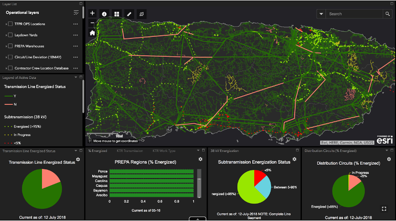
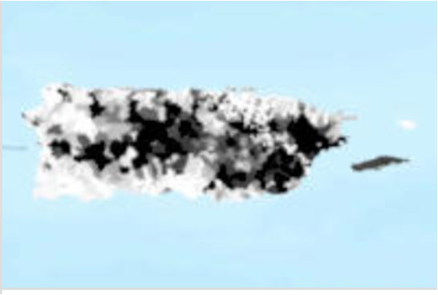

I deployed to Puerto Rico as GIS Team Lead after Hurricane Maria. The island had lost nearly all power. The federal response needed to know, in real time, what was energized and what wasn’t — across every transmission line, every substation, every circuit. I built the geospatial platform that put that picture together.
Hurricane Maria made landfall in Puerto Rico on September 20, 2017, as a Category 4 hurricane. Nearly the entire island lost power — 3.4 million people. The power grid had been fragile before the storm. After, it was catastrophically damaged.
I deployed to Puerto Rico as GIS Team Lead with the U.S. Army Corps of Engineers’ Task Force Power Restoration. The mission: help restore power to the island as quickly as possible. My job: build the geospatial infrastructure that made the whole operation legible. What was energized? What wasn’t? Where were the crews? What had been completed and what was still down? Nobody had a clear picture of any of it when I arrived.
In a normal infrastructure project, you start with data. In a disaster response, you start with chaos.
The power grid data for Puerto Rico existed in fragments — different agencies had different pieces, in different formats, at different levels of accuracy. PREPA (the Puerto Rico Electric Power Authority) had some data. The Corps had some. Other federal agencies had more. None of it talked to each other.
My first task was establishing data standards so that information flowing in from multiple sources could actually be combined into a coherent picture. Then building the platform that displayed it — updated as crews reported back from the field.


Disaster response GIS is a different discipline from standard geospatial work. The data is incomplete and constantly changing. The decisions being made with your maps are high-stakes and time-sensitive. The people consuming your products are not GIS analysts — they’re commanders, logistics officers, federal officials.
The map has to be instantly legible to people who will look at it once and act on it. That discipline — making complex spatial data immediately usable for non-technical decision-makers — is something I carried back from Puerto Rico into every product I’ve built since.
By the time the mission wound down, Puerto Rico’s power grid restoration was trackable at every level — from individual distribution circuits to regional summaries to island-wide status. The products built by the team were used at every level of the federal government response, up to and including the White House.
The Commander’s Award recognized the team’s contribution. But what I carried away was something harder to put on a resume: the experience of building geospatial infrastructure under pressure, in an environment where the data didn’t exist yet, where the standards had to be established from scratch, and where getting it wrong had real consequences for people who were still without power.